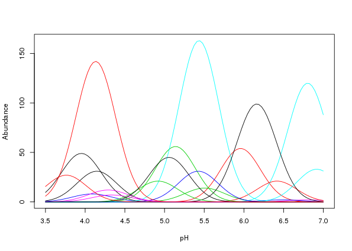
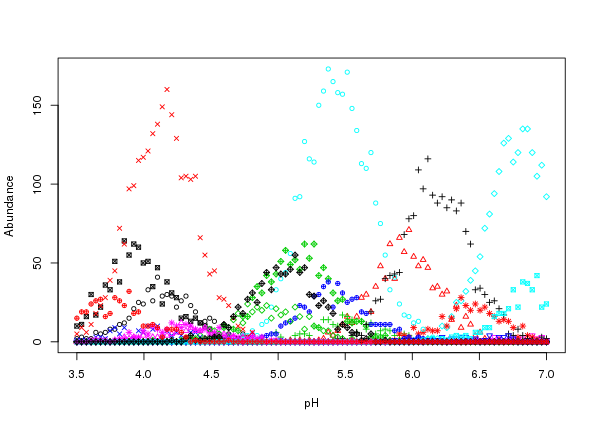
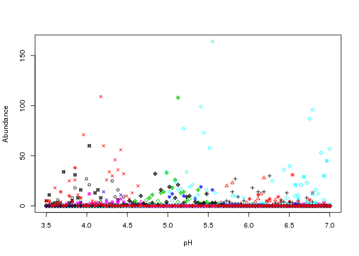
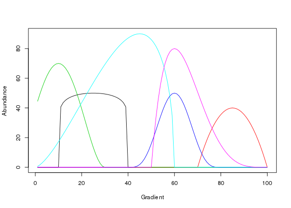
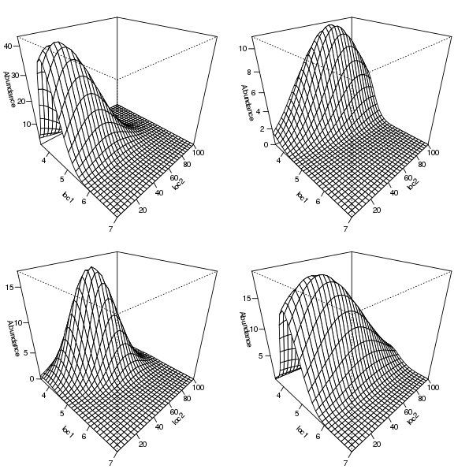
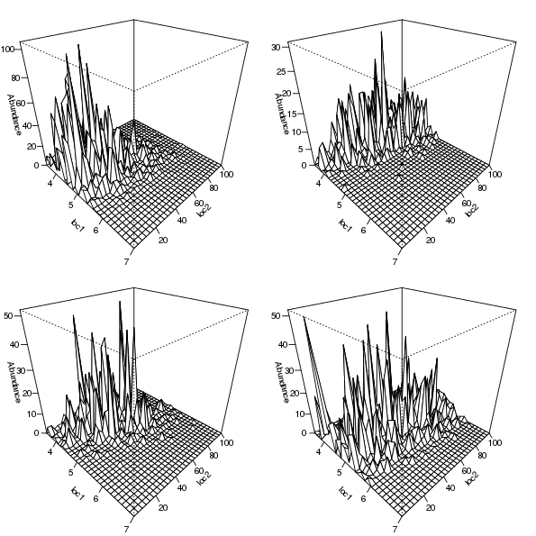

Simulating species abundance data with coenocliner
Posted in
Tagged
Coenoclines are, according to the Oxford Dictionary of Ecology (Allaby, 1998), “gradients of communities (e.g. in a transect from the summit to the base of a hill), reflecting the changing importance, frequency, or other appropriate measure of different species populations”. In much ecological research, and that of related fields, data on these coenoclines are collected and analyzed in a variety of ways. When developing new statistical methods or when trying to understand the behaviour of existing methods, we often resort to simulating data with known pattern or structure and then torture whatever method is of interest with the simulated data to tease out how well methods work or where they breakdown. There’s a long history of using computers to simulate species abundance data along coenoclines but until recently no R packages were available that performed coenocline simulation. coenocliner was designed to fill this gap, and today, the package was released to CRAN.
coenocliner can simulate species abundance or occurrence data along one or two gradients from either a Gaussian or generalised beta response model. Parameters for the response model are supplied for each species and parameterised species repsonse curves along the gradients are returned. Simulated abundance or occurrence data can be produced by sampling from one of several error distributions which use the parameterised species response curves as the expected count or probability of occurrence for the chosen error distribution. The available error distributions are
- Poisson
- Negative binomial
- Bernoulli (occurrence; Binomial with denominator \(m = 1\))
- Binomial (counts with specified denominator \(m\))
- Beta-binomial
- Zero-inflated Poisson (ZIP)
- Zero-inflated negative binomial (ZINB)
You can find the source code on github and report any bugs or issues there. In the remainder of this posting I give an overview of coenocliner and show three examples illustrating features of package.
Introduction to coenocliner
To begin, load coenocliner and check the start-up message to see if you are using the current (0.1-0) release of the package
library("coenocliner")The main function in coenocliner is coenocline(), which provides a relatively simple interface to coenocline simulation allowing flexible specification of gradient locations and response model parameters for species. Gradient locations are specified via argument x, which can be a single vector, or, in the case of two gradients, a matrix or a list containing vectors of gradient values. The matrix version assumes the first gradient’s values are in the first column and those for the second gradient in the second column
xy <- cbind(x = seq(from = 4, to = 7, length.out = 100),
y = seq(from = 1, to = 100, length.out = 100))Similarly, for the list version, the first component contains the values for the first gradient and the second component the values for the second gradient
xy <- list(x = seq(from = 4, to = 6, length.out = 100),
y = seq(from = 1, to = 100, length.out = 100))The species response model used is indicated via the responseModel argument; available options are "gaussian" and "beta" for the classic Gaussian response model and the generalise beta response model respectively. Parameters are supplied to coenocline() via the params argument. showParams() can be used list the parameters for the desired response model. The parameters for the Gaussian response model are
showParams("gaussian")
Species response model: Gaussian
Parameters:
[1] opt tol h*
Parameters marked with '*' are only supplied once
As indicated, some parameters are only supplied once per species, regardless of whether there are one or two gradients. Hence for the Gaussian model, the parameter h is only supplied for the first gradient even if two gradients are required.
Parameters are supplied as a matrix with named columns, or as a list with named components. For example, for a Gaussian response for each of 3 species we could use either of the two forms
opt <- c(4,5,6)
tol <- rep(0.25, 3)
h <- c(10,20,30)
parm <- cbind(opt = opt, tol = tol, h = h) # matrix form
parl <- list(opt = opt, tol = tol, h = h) # list formIn the case of two gradients, a list with two components, one per gradient, is required. The first component contains parameters for the first gradient, the second element contains those for the second gradient. These components can be either a matrix or a list, as described previously. For example a list with parameters supplied as matrices
opty <- c(25, 50, 75)
tol <- c(5, 10, 20)
pars <- list(px = parm,
py = cbind(opt = opty, tol = tol))Note that parameter \(h\) is not specified in the second set as this parameter, the height of the response curve at the gradient optima, applies globally — in the case of two gradients, \(h\) refers to the height of the bell-shaped curve at the bivariate optimum.
Notice also how parameters are specified at the species level. To evaluate the response curve at the supplied gradient locations each set of parameters needs to be repeated for each gradient location. Thankfully coenocline() takes care of this detail for us.
Additional parameters that may be needed for the response model but which are not specified at the species level are supplied as a list with named components to argument extraParams. An example is the correlation between Gaussian response curves in case of two gradients. This, unfortunately, means that a single correlation between response curves applies to all species1, and is caused by a poor choice of implementation. Thankfully this is relatively easy to fix, which will be done for version 0.2-0 along with a fix for a similar issue relating to the statement of additional parameters for the error distribution used (see below).
To simulate realistic count data we need to sample with error from the parameterised species response curves. Which of the distributions (listed earlier) is used is specified via argument countModel; available options are
[1] "poisson" "negbin" "bernoulli" "binary"
[5] "binomial" "betabinomial" "ZIP" "ZINB"
Some of these distributions (all bar "poisson" and "bernoulli") require additional arguments, such as the \(\) parameter for (one parameterisation of) the negative binomial distribution. These arguments are supplied as a list with named components. Again, due to the same implementation snafu as for extraParams, such parameters act globally for all species2.
The final argument is expectation, which defaults to FALSE. When set to TRUE, simulating species counts or occurrences with error is skipped and the values of the parameterised response curve evaluated at the gradient locations are returned. This option is handy if you want to look at or plot the species response curves used in a simulation.
Example usage
In the next few sections the basic usage of coenocline() is illustrated.
Gaussian responses along a single gradient
This example, of multiple species responses along a single environmental gradient, illustrates the simplest usage of coenocline(). The example uses a hypothetical pH gradient with species optima drawn at random uniformally along the gradient. Species tolerances are the same for all species. The maximum abundance of each species, \(h\), is drawn from a lognormal distribution with a mean of ~20 (\(e^3\)). This simulation will be for a community of 20 species, evaluated at 100 equally spaced locations. First we set up the parameters
set.seed(2)
M <- 20 # number of species
ming <- 3.5 # gradient minimum...
maxg <- 7 # ...and maximum
locs <- seq(ming, maxg, length = 100) # gradient locations
opt <- runif(M, min = ming, max = maxg) # species optima
tol <- rep(0.25, M) # species tolerances
h <- ceiling(rlnorm(M, meanlog = 3)) # max abundances
pars <- cbind(opt = opt, tol = tol, h = h) # put in a matrixAs a check, before simulating any count data, we can look at the coenocline implied by these parameters by returning the expectations only from coenocline()
mu <- coenocline(locs, responseModel = "gaussian", params = pars,
expectation = TRUE)This returns a matrix of values obtained by evaluating each species response curve at the supplied gradient locations. There is one column per species and one row per gradient location
class(mu)
dim(mu)
head(mu[, 1:6])
[1] "matrix"
[1] 100 20
[,1] [,2] [,3] [,4] [,5] [,6]
[1,] 1.088 5.443e-20 1.433e-13 0.5025 1.461e-36 2.604e-38
[2,] 1.553 2.165e-19 4.414e-13 0.6938 9.370e-36 1.669e-37
[3,] 2.173 8.440e-19 1.333e-12 0.9391 5.892e-35 1.049e-36
[4,] 2.981 3.225e-18 3.945e-12 1.2460 3.631e-34 6.460e-36
[5,] 4.008 1.208e-17 1.144e-11 1.6203 2.194e-33 3.900e-35
[6,] 5.282 4.435e-17 3.254e-11 2.0655 1.299e-32 2.308e-34
A quick way to visualise the parameterised species response is to use matplot()3
matplot(locs, mu, lty = "solid", type = "l", xlab = "pH", ylab = "Abundance")
The resultant plot is shown in Figure 1.
As this looks OK, we can simulate some count data. The simplest model for doing so is to make random draws from a Poisson distribution with the mean, \(\), for each species set to value of the response curve evaluated at each gradient location. Hence the values in mu that we just created can be thought of as the expected count per species at each of the gradient locations we are interested in. To simulate Poisson count data, use expectation = FALSE or remove this argument from the call. To be more explicit, we should also state countModel = "poisson"4.
simp <- coenocline(locs, responseModel = "gaussian", params = pars,
countModel = "poisson")Again, matplot is useful in visualizing the simulated data
matplot(locs, simp, lty = "solid", type = "p", pch = 1:10, cex = 0.8,
xlab = "pH", ylab = "Abundance")
The resultant plot is shown in Figure 2 above.
Whilst the simulated counts look reasonable and follow the response curves in Figure \(\ref{fig:example1-plot-expectations}\) there is a problem; the variation around the expected curves is too small. This is due to the error variance implied by the Poisson distribution encapsulating only that variance which would arise due to repeated sampling at the gradient locations. Most species abundance data exhibit much larger degrees of variation than that shown in Figure \(\ref{fig:example1-plot-simulations}\).
A solution to this is to sample from a distribution that incorporates additional variance or overdispersion. A natural partner to the Poisson that includes overdispersion is the negative binomial. To simulate count data using the negative binomial distribution we must alter countModel and supply the overdispersion parameter \(\alpha\) to use5 via countParams.
simnb <- coenocline(locs, responseModel = "gaussian", params = pars,
countModel = "negbin", countParams = list(alpha = 0.5))Using matplot it is apparent that the simluated species data are now far more relalistic (Figure 3)
matplot(locs, simnb, lty = "solid", type = "p", pch = 1:10, cex = 0.8,
xlab = "pH", ylab = "Abundance")
Generalised beta responses along a single gradient
In this example, I recreate figure 2 in Minchin (1987) and then simulate species abundances from the species response curves. The species parameters for the generalised beta response for the six species in Minchin (1987) are
A0 <- c(5,4,7,5,9,8) * 10 # max abundance
m <- c(25,85,10,60,45,60) # location on gradient of modal abundance
r <- c(3,3,4,4,6,5) * 10 # species range of occurence on gradient
alpha <- c(0.1,1,2,4,1.5,1) # shape parameter
gamma <- c(0.1,1,2,4,0.5,4) # shape parameter
locs <- 1:100 # gradient locations
pars <- list(m = m, r = r, alpha = alpha,
gamma = gamma, A0 = A0) # species parameters, in list formTo recreate figure 2 in Minchin (1987) evaluations at the chosen gradient locations, locs, of the parameterised generalised beta are required and can be generated by passing coenocline() the gradient locations and the chosen species parameters as before, choosing the generalised beta response model and using expectation = TRUE
mu <- coenocline(locs, responseModel = "beta", params = pars, expectation = TRUE)As before mu is a matrix with one column per species
head(mu)
[,1] [,2] [,3] [,4] [,5] [,6]
[1,] 0 0 44.52 0 0.5913 0
[2,] 0 0 49.39 0 1.6582 0
[3,] 0 0 53.90 0 3.0199 0
[4,] 0 0 57.97 0 4.6085 0
[5,] 0 0 61.52 0 6.3828 0
[6,] 0 0 64.51 0 8.3138 0
and as such we can use matplot() to draw the species responses
matplot(locs, mu, lty = "solid", type = "l", xlab = "Gradient", ylab = "Abundance")
Figure 4 is a good facsimile of figure 2 in Minchin (1987).
Gaussian response along two gradients
In this example I illustrate how to simulate species abundance in an environment comprising two gradients. Parameters for the simulation are defined first, including the number of species and samples required, followed by definitions of the gradient units and lengths, species optima, and tolerances for each gradient, and the maximal abundance (\(h\)).
set.seed(10)
N <- 30 # number of samples
M <- 20 # number of species
## First gradient
ming1 <- 3.5 # 1st gradient minimum...
maxg1 <- 7 # ...and maximum
loc1 <- seq(ming1, maxg1, length = N) # 1st gradient locations
opt1 <- runif(M, min = ming1, max = maxg1) # species optima
tol1 <- rep(0.5, M) # species tolerances
h <- ceiling(rlnorm(M, meanlog = 3)) # max abundances
par1 <- cbind(opt = opt1, tol = tol1, h = h) # put in a matrix
## Second gradient
ming2 <- 1 # 2nd gradient minimum...
maxg2 <- 100 # ...and maximum
loc2 <- seq(ming2, maxg2, length = N) # 2nd gradient locations
opt2 <- runif(M, min = ming2, max = maxg2) # species optima
tol2 <- ceiling(runif(M, min = 5, max = 50)) # species tolerances
par2 <- cbind(opt = opt2, tol = tol2) # put in a matrix
## Last steps...
pars <- list(px = par1, py = par2) # put parameters into a list
locs <- expand.grid(x = loc1, y = loc2) # put gradient locations togetherNotice how the parameter sets for each gradient are individual matrices which are combined in a list, pars, ready for use. Also different this time is the expand.grid() call which is used to generate all pairwise combinations of the locations on the two gradients. This has the effect of creating a coordinate pair on the two gradients at which we’ll evaluate the response curves. In effect this creates a grid of points over the gradient space.
Having set up the parameters, the call to coenocline() is the same as before, except now we specify a degree of correlation between the two gradients via extraParams = list(corr = 0.5)
mu2d <- coenocline(locs, responseModel = "gaussian",
params = pars, extraParams = list(corr = 0.5),
expectation = TRUE)mu2d now contains a matrix of expected species abundances, one column per species as before. Because of the way the expand.grid() function works, the ordering of species abudances in each column has the first gradient locations varying fastest — the locations on the first gradient are repeated in order for each location on the second gradient
head(locs)
x y
1 3.500 1
2 3.621 1
3 3.741 1
4 3.862 1
5 3.983 1
6 4.103 1
As a result, we can reshape the abundances for a single species into a matrix reflecting the grid of locations over the gradient space via a simple matrix() call, setting the number of columns in the resultant matrix equal to the number of gradient locations in the simulation. By way of illustration, this approach is used to prepare the expected abundances for four of the species in mu2d for plotting via the persp() plotting function
layout(matrix(1:4, ncol = 2))
op <- par(mar = rep(1, 4))
for (i in c(2,8,13,19)) {
persp(loc1, loc2, matrix(mu2d[, i], ncol = length(loc2)),
ticktype = "detailed", zlab = "Abundance",
theta = 45, phi = 30)
}
par(op)
layout(1)
The selected species response curves are shown in Figure 5.
Simulated counts for each species can be produced by removing expectation = TRUE from the call and choosing an error distribution to make random draws from. For example, for negative binomial errors with dispersion \(= 1\) we can use
sim2d <- coenocline(locs, responseModel = "gaussian",
params = pars, extraParams = list(corr = 0.5),
countModel = "negbin", countParams = list(alpha = 1))The resulting simulated counts for the same four selected species are shown in Figure 6, which was generated using the code below
layout(matrix(1:4, ncol = 2))
op <- par(mar = rep(1, 4))
for (i in c(2,8,13,19)) {
persp(loc1, loc2, matrix(sim2d[, i], ncol = length(loc2)),
ticktype = "detailed", zlab = "Abundance",
theta = 45, phi = 30)
}
par(op)
layout(1)
References
Footnotes
This is not strictly true as you can work out how the species parameters are replicated relative to gradient values and hence pass a vector of the correct length with the species-specific values included. Study the outputs from
expand()when supplied gradient locations and parameters to work out how to specifyextraParamsappropriately↩︎Again, this is not strictly true as you can work out how the species parameters are replicated relative to gradient values and hence pass a vector of the correct length with the species-specific values included. Study the outputs from
expand()when supplied gradient locations and parameters to work out how to specifycountParamsappropriately↩︎until such a time as the coenocliner has a
plotmethod…↩︎countModel = "poisson"is the default so this can be excluded from the call.↩︎Recall that this is only easily specifiable globally in version 0.1-0 of coenocliner.↩︎